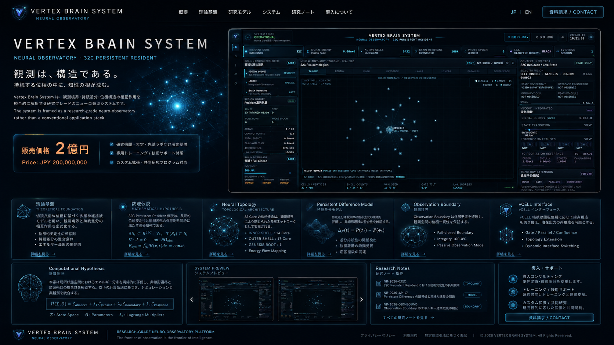

Membrane-Bounded Observability
境界作用素 ∂M が fail-closed であるなら、許可されない状態遷移は外部可視層へ安定的に投影されない。
THEORY OF CONSTRAINED OBSERVABILITY
VERTEX BRAIN SYSTEM は、Residentを単なる実行中プロセスではなく、境界条件・位相構造・証拠保存性を備えた時変対象として定式化し、その観測可能性を工学的に検証するためのNeural Observatoryである。
SYSTEM VISUALIZATION / OBSERVATION SURFACE

このUIは装飾ではなく、Resident / Region / Brain Membrane / vSCOPE / Evidence を同一観測面へ射影するための視覚的境界層である。 したがって表示座標 yt は状態 xt の単純な複製ではなく、 観測写像 Ov とEvidence射影 ΠE を経た制約付き表現として扱われる。
REFERENCE COMMERCIAL VALUATION
一般消費財としての価格形成ではなく、研究設備・専用観測系・継続的実験基盤としての参照評価額。 VERTEX BRAIN SYSTEM は通常販売を前提としない。
V = ∫₀ᵀ [I(t) + O(t) + E(t) + C(t)] dt
JPY 200,000,000
01 / ABSTRACT
本系では Resident を状態ベクトル x_t ∈ Ω_R をもつ動的対象とみなし、Brain Membrane を境界作用素 ∂M、vSCOPE を局所観測写像 O_v : Ω_R → E と定義する。これにより、UI表示・内部状態・Evidence記録を同一観測体系で扱えるようになる。
目的は、(i) 可観測性、(ii) 証拠保存性、(iii) 連続運転下での状態整合性、の3条件を同時に満たすことにある。特に fail-closed な外膜境界を仮定することで、不正経路の外部化を抑制しつつ、正規観測経路のみをEvidence層へ投影する。
ここでの重要点は、「見えているUI」が真実なのではなく、Source → Runtime → Evidence の閉路が成立して初めて観測結果が信頼境界内で意味を持つ、という点である。これは学術的には、実装系に対する工学的観測論の一形態として理解できる。
02 / HYPOTHESES
境界作用素 ∂M が fail-closed であるなら、許可されない状態遷移は外部可視層へ安定的に投影されない。
vCELLの回転作用 R(θ) は接触隣接行列 A(θ) を変形し、同一アイデンティティを保持したまま出力多様体を切り替えうる。
観測保存的摂動に対して state fingerprint σ_t の変動は局所的に有界であり、連続性の痕跡として扱える。
受理される遷移はすべて、少なくとも1本の evidence trace τ = {(s_i, e_i)} を伴って追跡可能である。
03 / TOPOLOGY
CELL 000001 / GENESIS を中心核とし、Region 000032 を観測面の主座標系として扱う。
Inner 14 core / Outer 17 core の二層分割は、単なる可視表現ではなく接点分布仮説の工学的断面である。
接続線はデザイン装飾ではなく、将来的な signal-energy / arrival / egress の位相的写像先を示す。
04 / OBSERVATION NOTES
Resident state の局所射影を表す識別子。可観測性の基底座標ではあるが、単独では真理条件を満たさない。
Root / Throne を起点として、到達観測よりも先に観測境界の妥当性を評価する。
Error 1.95e-2, Egress 1.0000, Evaluations 1。これは完全性の証明ではなく、継続観測の前提条件である。
ゆえに、観測系の価値は視覚的派手さではなく、同一条件下での再投影可能性に帰着する。これは VRA / VXN / runtime trace による移送可能性の設計原理でもある。
CONCLUSION
VERTEX BRAIN SYSTEM は、視覚UI・Runtime実体・Evidence証跡を分断せず、境界づけられた観測論として再結合するための実験系である。